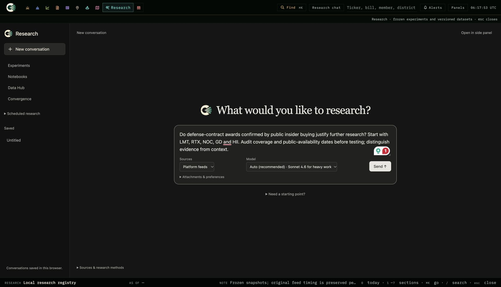
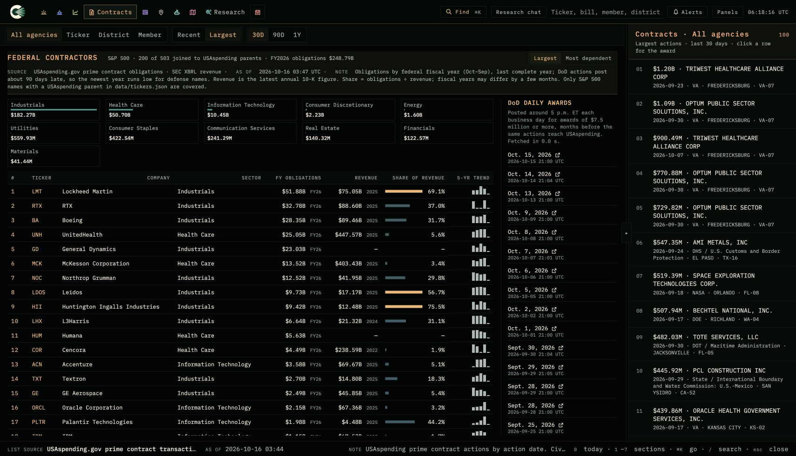
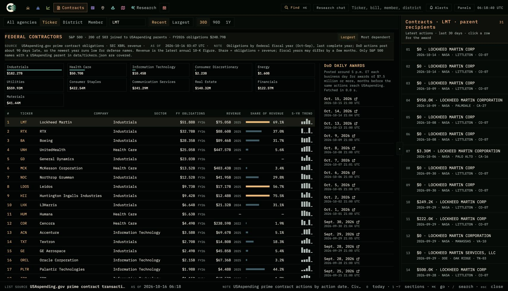
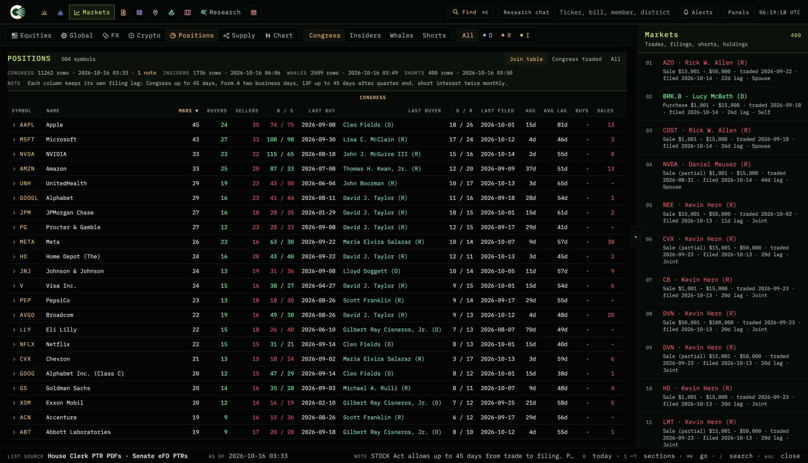
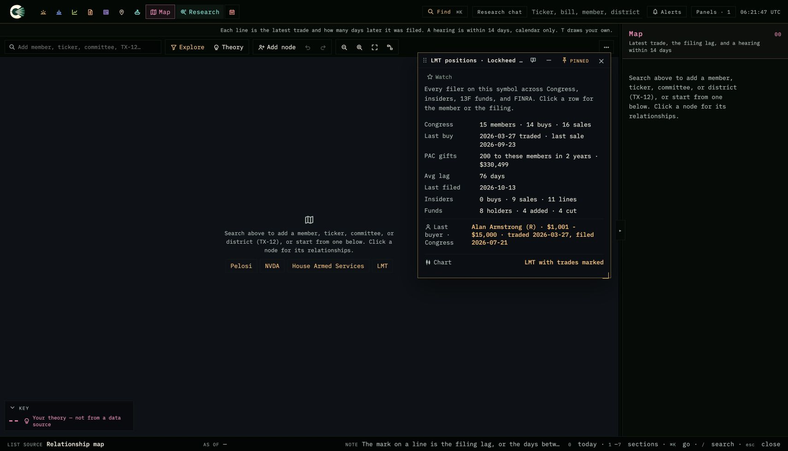
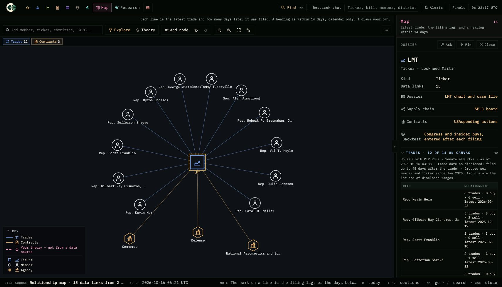
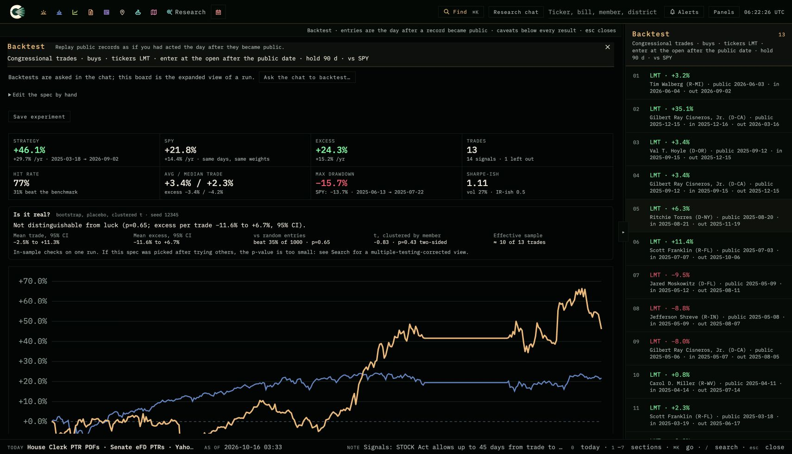
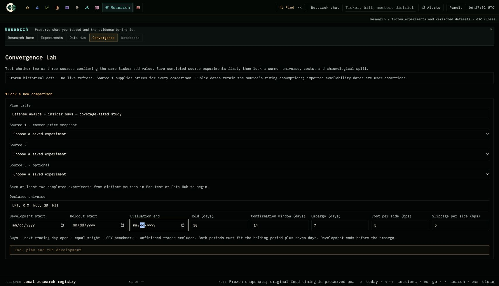
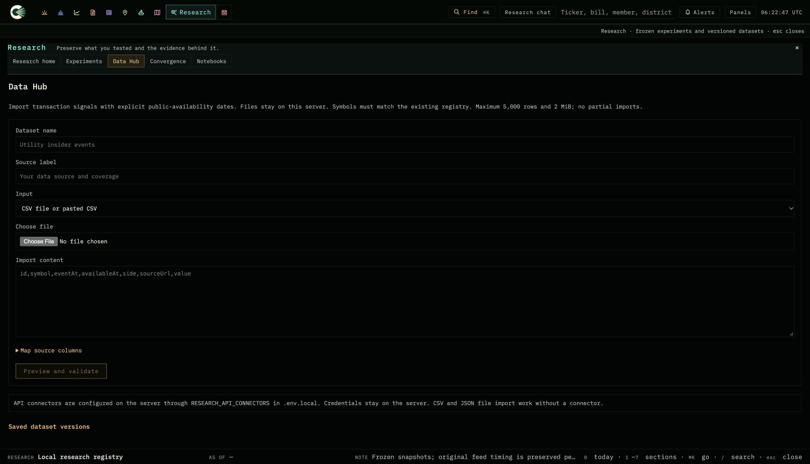
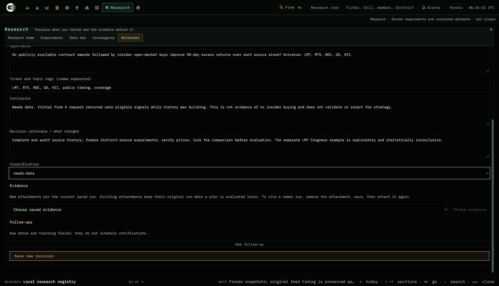
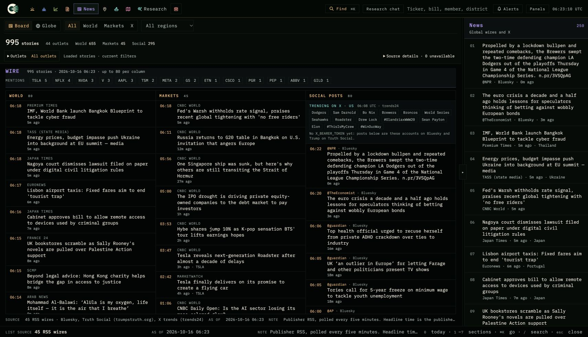
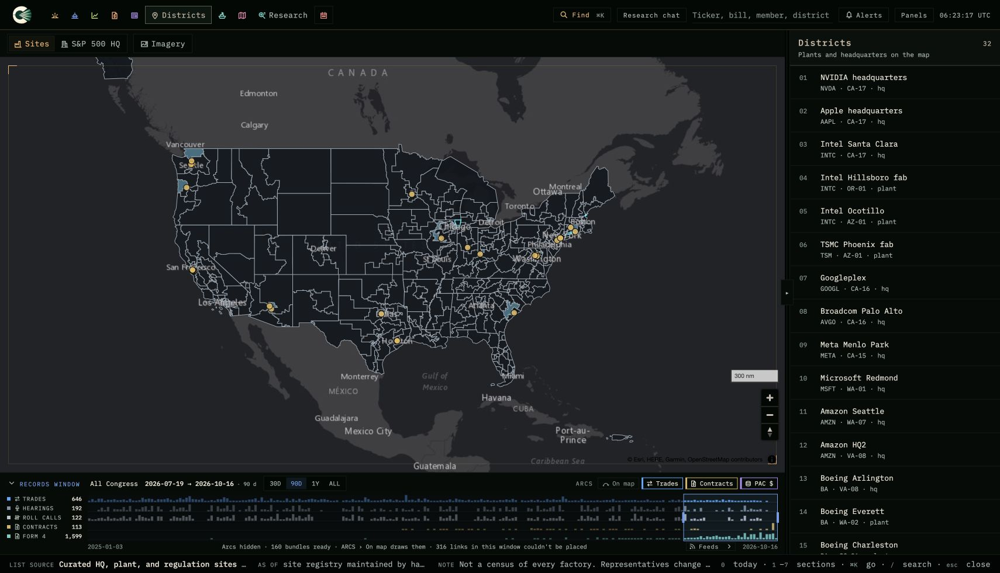
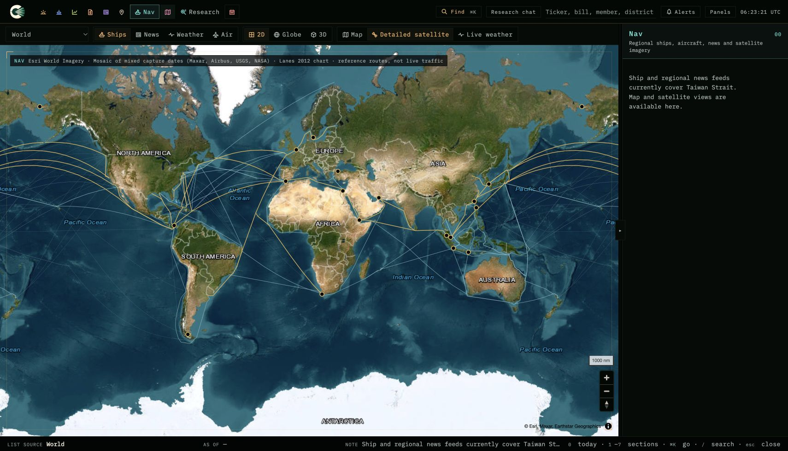
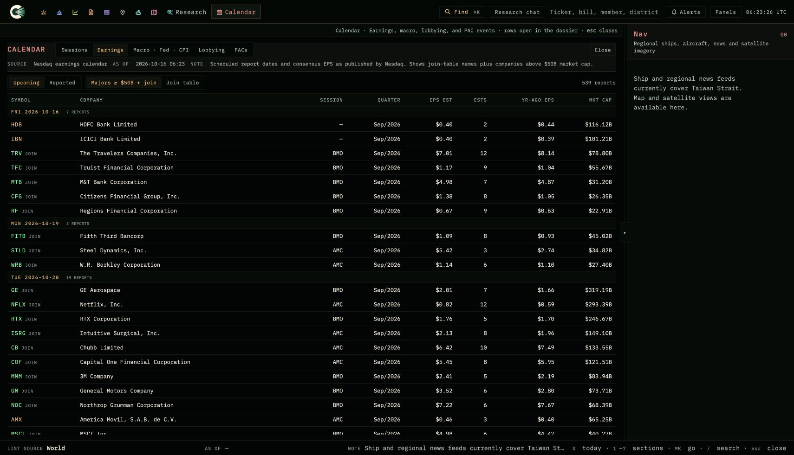
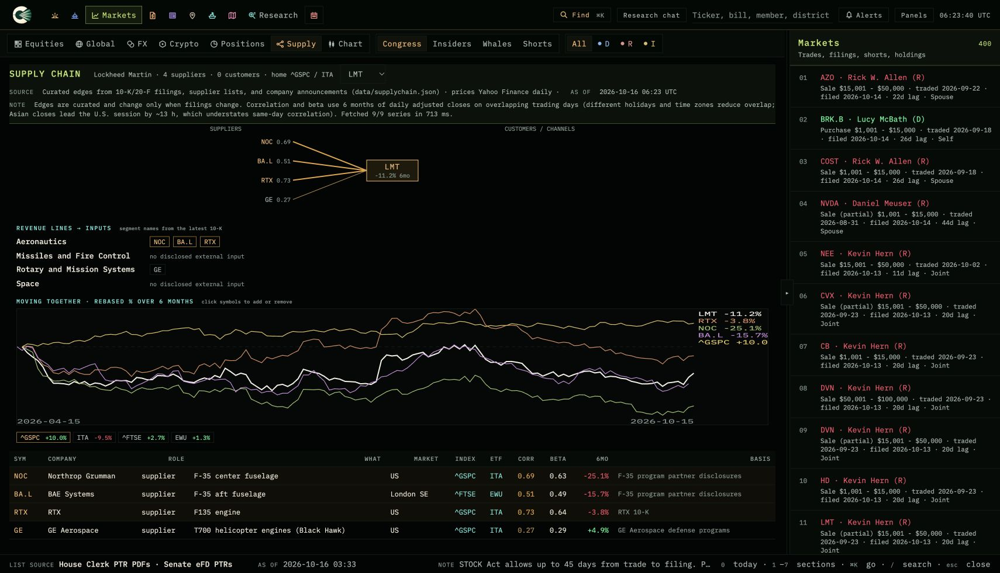
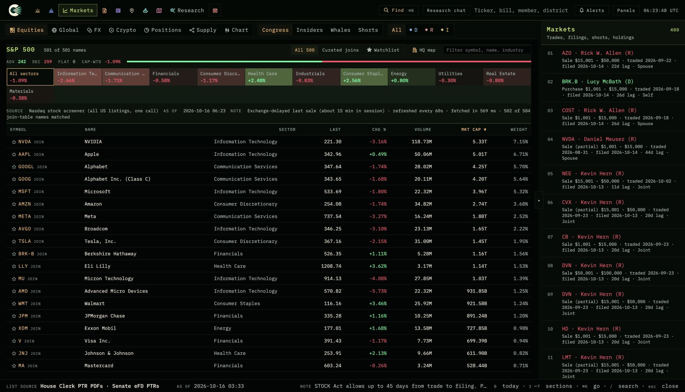
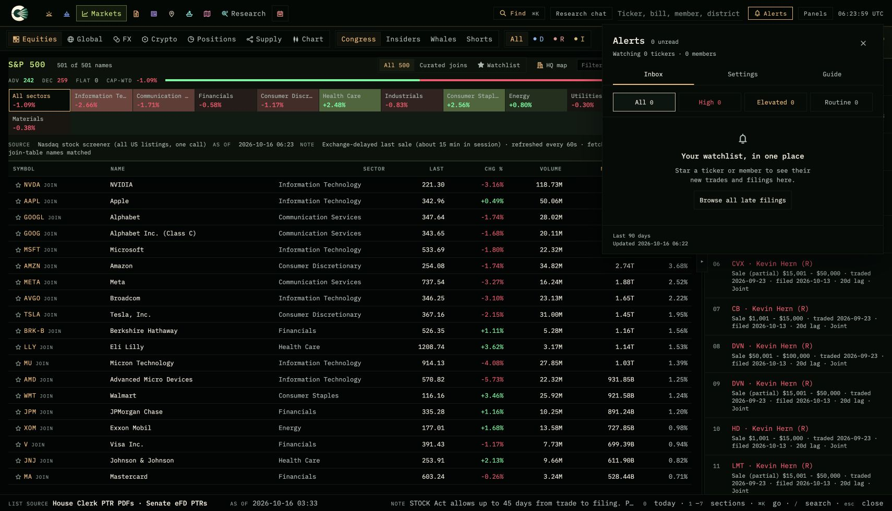
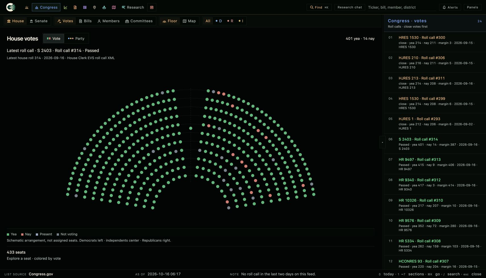
Original app captures. Drafts and exploratory results must retain the distinctions described in START-HERE.
Claude Design prompt · Analyst workflow · 160-second storyboard

















